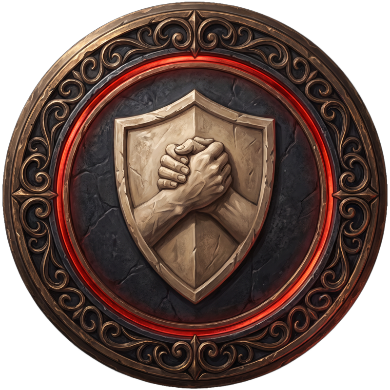
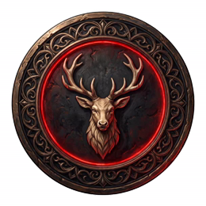

De Kronieken van het Vergeten Weekend
Volbrachte Quests
Vlam van
Waakzaamheid
Hoorn van
Overvloed

Schild van
Broederschap

Hart van
de Ardennen
Quest volbracht? Kaart erin, en meld het aan een hoeder.
De Zegels groeien op de tv.
✦ Wij waken ✦